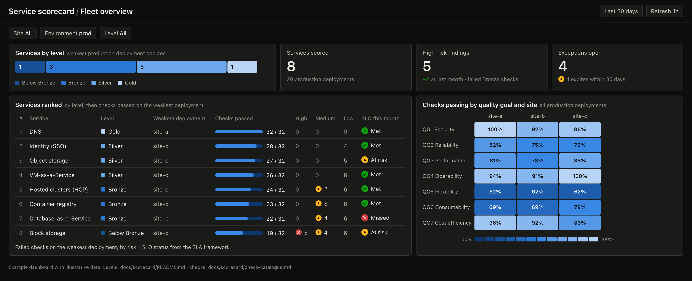

How every service in our private cloud is designed, built and checked
Requirements · Quality goals · Principles · Scorecard
Every team describes service quality the same way: the same requirements, the same eight quality goals.
Every quality goal is written as scenarios with a measure, so it can be checked instead of debated.
One repeatable way to review, rank and improve hundreds of services and deployments.
Built on ISO/IEC 25010:2023, the AWS Well-Architected Framework and the Google Cloud Architecture Framework
A requirement is a business operation, not how the service is built (ADR-0001)
If it takes 3 hours, it misses the measure, and the miss uses error budget in the SLA framework.
The scenario form comes from SEI's ATAM (ADR-0002)
QG2 Reliability · QG3 Performance
Seen every time an operation runs: did it work, how long did it take?
Checked with SLOs and error budgets, per requirement, in the SLA framework.
QG1 · QG4 – QG8
Properties of how the service is built and run: security, operability, cost…
Checked with automated checks, the scorecard and reviews.
Green: runtime, checked with SLOs · Blue: built-in, checked by the scorecard
Every service protects its data and its access by default, and can account for every action taken on it.
ISO 25010: Security · AWS: Security · Google: Security, privacy and compliance
Every service publishes its SLO and keeps it through the failure of any single component or zone.
ISO 25010: Reliability, Safety · AWS: Reliability · Google: Reliability
Every service delivers predictable, measured performance and is sized to demand. Capacity limits are known before they are reached.
ISO 25010: Performance efficiency · AWS: Performance efficiency · Google: Performance optimization
Every service is operated through automation and can be observed, diagnosed and changed safely and frequently.
ISO 25010: Maintainability, Operability · AWS and Google: Operational excellence
Every service depends only on the capability it consumes, never on the implementation behind it.
ISO 25010: Flexibility · Google: Design for change, Decouple your architecture
A consumer can find, understand and use any service without help from the team that runs it.
ISO 25010: Interaction capability, Functional suitability, Compatibility
Every unit of capacity is attributed to an owner, justified by business value and right-sized. Cost is visible to those who create it.
ISO 25010: Resource utilization · AWS and Google: Cost optimization
Our energy and hardware footprint goes down as utilisation goes up.
Candidate for removal. Open question: does the server life cycle move to QG2 Reliability?

Example dashboard, illustrative data · also: deployments ranking, service detail
Requirements R1–R5
Quality goals QG1–QG8, as scenarios
Principles
SLA framework: SLOs, error budgets, SLA
QG2, QG3
Scorecard: checks, levels, ranking, dashboards
All quality goals
ADRs for decisions
Exceptions with an expiry date
N targets in the quality goal measures